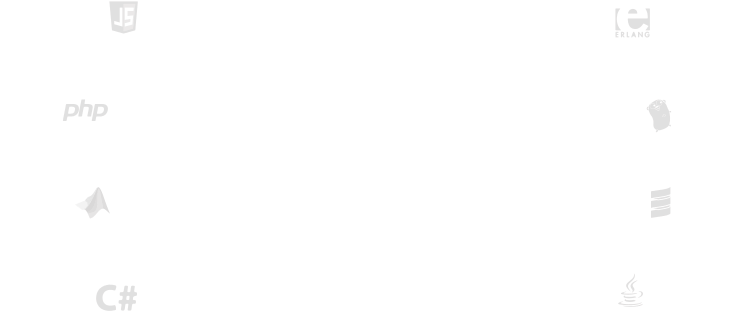

Project Jupyter exists to develop open-source software, open-standards, and services for interactive computing across dozens of programming languages.

A multi-user version of the notebook designed for companies, classrooms and research labs
Pluggable authentication
Manage users and authentication with PAM, OAuth or integrate with your own directory service system.

Centralized deployment
Deploy the Jupyter Notebook to thousands of users in your organization on centralized infrastructure on- or off-site.

Container friendly
Use Docker and Kubernetes to scale your deployment, isolate user processes, and simplify software installation.

Code meets data
Deploy the Notebook next to your data to provide unified software management and data access within your organization.